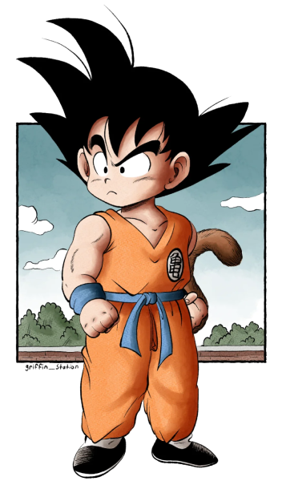
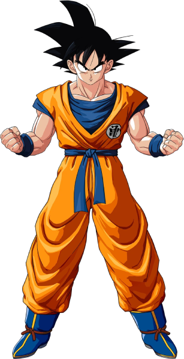
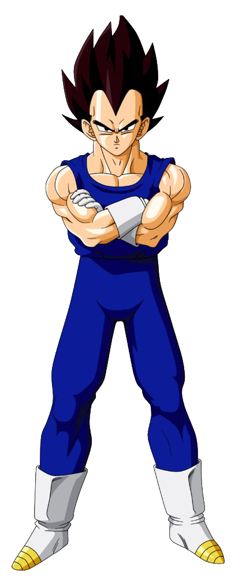
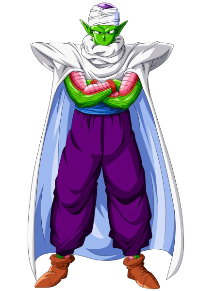

Dragon Ball History
Explora la historia y los personajes de la saga legendaria
Descubre másSumérgete en un universo lleno de aventuras, héroes y secretos ocultos. Conoce a los personajes principales, descubre curiosidades y revive momentos épicos que marcaron la historia.

Todo comenzó cuando Goku, un niño con una fuerza increÃble, inicia su aventura buscando las Esferas del Dragón. Durante su viaje conoce amigos, enemigos y descubre sus verdaderos orÃgenes como guerrero Saiyajin. Dragon Ball no solo nos habla de peleas, sino de amistad, sacrificio y superación personal.
Ver historia completa

El Saiyajin más fuerte del universo.

PrÃncipe de los Saiyajin y orgulloso guerrero.

Un Namekiano sabio y poderoso.

El cabello Saiyajin nunca crece una vez que alcanzan la adultez.

El Kamehameha fue inspirado por una técnica de yoga.

Shenlong solo puede revivir a alguien una vez con las esferas de la Tierra.
Descubre todo lo que Dragon Ball tiene por ofrecer. Curiosidades, personajes, sagas y mucho más te esperan.
Explora el Universo Z